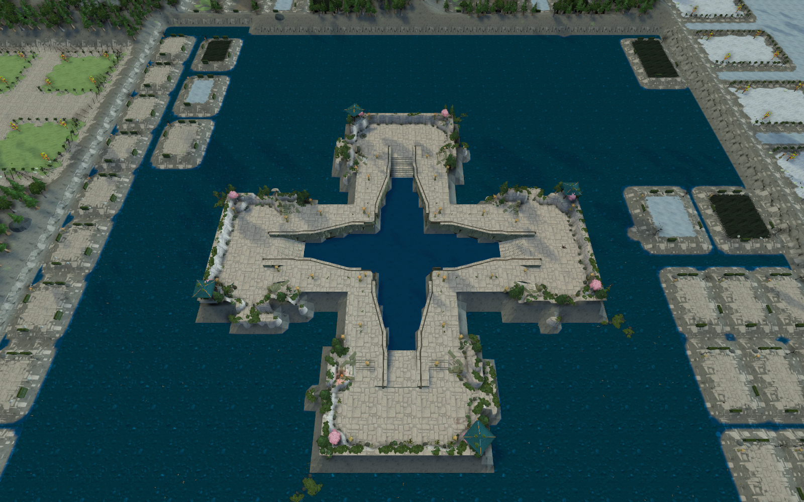

<!doctype html><html lang="zh-CN"><meta charset="utf-8"><meta name="viewport" content="width=device-width,initial-scale=1"><title>百鬼夜行 · 月下主岛</title>
<style>body{margin:0;background:#0c1120;color:#e7e3de;font:17px/1.7 system-ui,sans-serif}main{max-width:1280px;margin:auto;padding:32px 24px}h1{font-size:32px;letter-spacing:3px}p,figcaption{color:#aeb7cd}img{width:100%;display:block;border-radius:8px}figure{margin:28px 0}a{color:#e4ad83}nav{display:flex;gap:22px;flex-wrap:wrap}figcaption{padding:10px 0}button{background:#26334c;color:#fff;border:1px solid #52627b;border-radius:7px;padding:9px 16px;cursor:pointer;margin-right:12px}</style>
<main><h1>百鬼夜行 · 月下主岛</h1><p>冷色月光、东方灯火与蓝紫鬼火。保留三层主岛的攻城路线，花树林和温泉在夜色中形成较柔和的休憩景观。</p><nav><a href="#island_stairs">主岛灯火</a><a href="#hot_spring">花树温泉</a><a href="#camp_boundary">夜间营地</a><a href="verification.json">实机验证</a></nav>
<figure><figcaption>四岛全貌 · 切换比较</figcaption><p><button id="night">百鬼夜行</button><button id="day">修改前</button></p></figure><div id="gallery"></div></main>
<script>const stamp='?v='+Date.now();document.querySelector('#compare').src='central_island.png'+stamp;document.querySelector('#day').onclick=()=>document.querySelector('#compare').src='before_yokai_night/central_island.png';document.querySelector('#night').onclick=()=>document.querySelector('#compare').src='central_island.png'+stamp;for(const [id,title]of [['island_stairs','三层主岛 · 台阶与灯火'],['hot_spring','花树温泉 · 月色与薄雾'],['camp_boundary','营地夜色'],['volcanic_arena','火山挑战区'],['overview','全图夜景']]){const f=document.createElement('figure');f.id=id;const a=document.createElement('a');a.href=id+'.png';a.target='_blank';const img=document.createElement('img');img.src=id+'.png'+stamp;img.alt=title;const c=document.createElement('figcaption');c.textContent=title;a.append(img);f.append(a,c);document.querySelector('#gallery').append(f)}</script></html>
